Japan Trip 🇯🇵
Baba, Mama, and Baby Doggo in Japan
Thursday · March 12
Friday · March 13
Saturday · March 14
Sunday · March 15
Monday · March 16
Tuesday · March 17
Wednesday · March 18
Thursday · March 19
Friday · March 20
Saturday · March 21
Sunday · March 22
Thursday · March 12
Travel day. Depart San Francisco for Tokyo.
Outbound Flight
United UA 837
Depart: 11:40 AM
From: SFO , San Francisco, CA
To: NRT , Tokyo, Japan
Duration: 11h 20m
Aircraft: Boeing 777-200
Fare Class: United Economy (S)
Seats: 32D, 32F, 32G
Arrival: Friday, March 13 at 3:00 PM Tokyo time.
Friday · March 13
Arrive in Tokyo, head to hotel, and check in.
Arrival
Tokyo Narita (NRT)
Arrive: 3:00 PM
Flight: United UA 837
Arrival Plan
Narita Airport → Hyatt Regency Tokyo
Go through Immigration
Pick up luggage at Baggage Claim
Exit through Customs into Arrivals Hall
Follow signs for Airport Limousine Bus
Buy ticket to Hyatt Regency Tokyo (Shinjuku)
Go to assigned bus stop
Bus drops off directly at the hotel entrance
Best option: Airport Limousine Bus
Duration: ~90–120 minutes
Cost: ~3,600 yen per adult
Get Directions
Hotel
Hyatt Regency Tokyo
Hotels.com itinerary: 73362373143409
Check-in: Fri Mar 13 · 2:00 PM
Check-out: Tue Mar 17 · 11:00 AM
Stay: 4 nights
Guests: 2 adults · 1 child
Room: Deluxe Room · 1 King Bed · City View · Non-Smoking
Reserved for: Jhanvi Dangaria
2-7-2 Nishi-Shinjuku, Shinjuku-ku, Tokyo 160-0023 Japan
Get Directions to Hotel
Saturday · March 14
First full day in Tokyo. Easy, fun, and not too exhausting.
Highlights
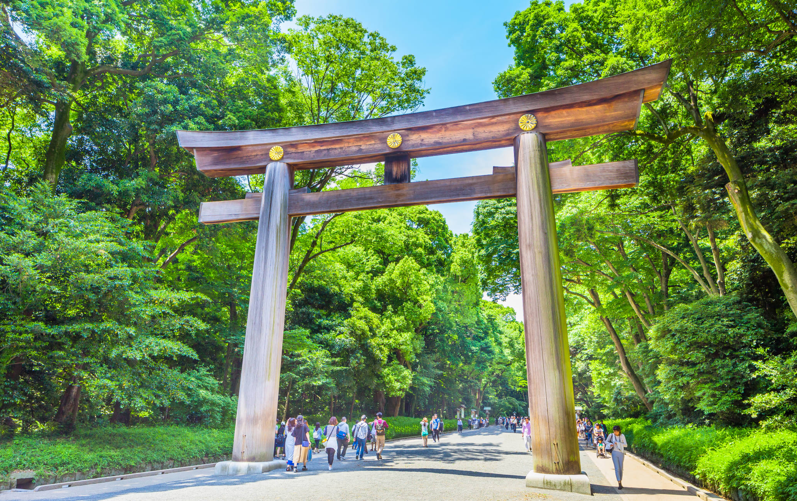
Meiji Shrine Peaceful forest shrine and an easy first stop.
Harajuku / Takeshita Street Fun snacks, crepes, candy, and lots of energy.
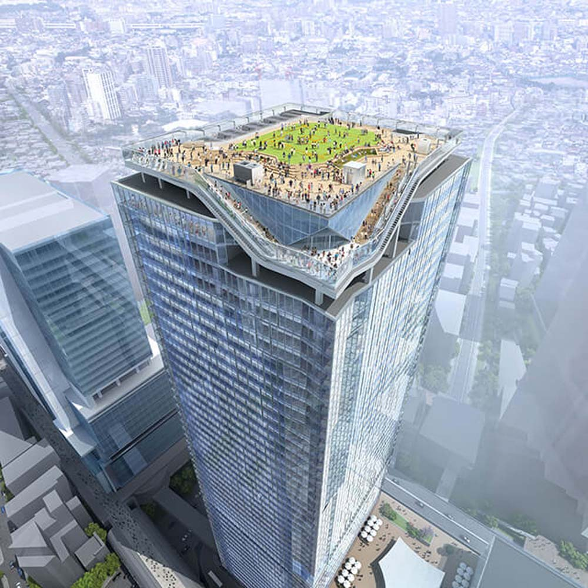
Shibuya Sky Observation deck with big city views.
Day Plan
9:00 AM — Breakfast near hotel10:00 AM — Walk hotel → Shinjuku Station West side / JR access10:15 AM — Train Shinjuku → Harajuku10:30 AM – 11:45 AM — Meiji Shrine11:50 AM – 1:00 PM — Harajuku snacks on Takeshita Street1:00 PM — Train Harajuku → Shibuya1:15 PM – 2:00 PM — Shibuya Crossing + Hachiko2:15 PM – 3:15 PM — Shibuya Sky3:30 PM — Train Shibuya → Shinjuku4:00 PM – 6:00 PM — Rest at hotel7:00 PM — Dinner in Shinjuku
Shibuya Sky
Observation deck above Shibuya Crossing
Recommended time: 2:15 PM
Buy timed-entry tickets in advance
Typical wait: 10–20 minutes
Buy Tickets
Get Directions
Sunday · March 15
Relaxed day: park walk, vegetarian lunch in Ginza, teamLab Planets.
Highlights
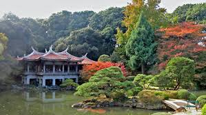
Shinjuku Gyoen Park
Peaceful morning walk in one of Tokyo’s most beautiful parks.
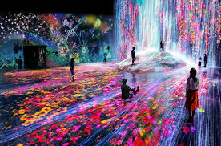
teamLab Planets
Immersive digital art museum with water rooms, light installations, and interactive exhibits.
Morning
9:30 AM — Leave hotel9:40 – 11:00 AM — Walk around Shinjuku Gyoen National Garden Large beautiful park, great for a calm start to the day
Open Park in Google Maps
Travel to Lunch
11:10 AM — Walk to Shinjuku-gyoemmae Station 11:20 AM — Take Tokyo Metro Marunouchi Line Route: Shinjuku-gyoemmae → Ginza
Travel time: ~15 minutes
11:40 AM — Walk ~6 minutes to restaurant
Lunch
Annam Indian Restaurant · Ginza
12:00 – 1:15 PM Vegetarian-friendly Indian cuisine
Good dishes: vegetable curry, dal, naan
Relaxed sit-down lunch before teamLab
Directions to Restaurant
Travel to teamLab
1:20 PM — Walk to Ginza Station 1:30 PM — Take Tokyo Metro Ginza Line Route: Ginza → Shimbashi (1 stop)
1:40 PM — Transfer to Yurikamome Line Route: Shimbashi → Shin-Toyosu
Travel time: ~25 minutes
2:05 PM — Walk 1–2 minutes to teamLab2:10 – 2:45 PM — Buffer time / snacks / line up early
teamLab Planets
Entry window: 3:00 – 3:30 PMEstimated visit: 90–120 minutesWalk barefoot through immersive digital art rooms
Open Tickets / QR Code
Return to Hotel
From Shin-Toyosu or Ariake-Tennis-no-Mori
Take Yurikamome Line → Shimbashi
Transfer to JR Yamanote Line
Route: Shimbashi → Shinjuku
Travel time: ~30 minutes
Walk ~10 minutes back to hotel
Monday · March 16
Traditional Tokyo morning in Asakusa followed by a relaxed afternoon back at the hotel.
Highlight
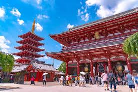
Senso-ji Temple
Tokyo’s oldest and most famous Buddhist temple, reached through the lively Nakamise shopping street filled with traditional snacks and souvenirs.
Morning Plan
9:00 AM — Leave hotelWalk to Shinjuku Station
9:15 AM — Train to AsakusaTake JR Chuo Line from Shinjuku → Kanda
Transfer to Tokyo Metro Ginza Line
Kanda → Asakusa Total travel time: ~30 minutes
Asakusa Visit
10:00 – 11:30 AM Explore Senso-ji Temple
Walk along Nakamise Street
Try traditional snacks like melon pan, mochi, or rice crackers
Get Directions
Lunch
11:30 AM – 12:30 PM Lunch in Asakusa
Vegetarian-friendly options include soba noodles, vegetable tempura, and tofu dishes
Return to Hotel
12:45 PM — Train back to ShinjukuTake Tokyo Metro Ginza Line
Asakusa → Kanda Transfer to JR Chuo Line
Kanda → Shinjuku Travel time: ~30 minutes
1:30 PM — Arrive back at hotel
Afternoon
1:30 – 5:30 PM Rest at hotel
Nap, recharge, or explore nearby shops
Evening
6:30 PM — Dinner near hotelExplore restaurants in Shinjuku
Optional walk through Omoide Yokocho
Tuesday · March 17
Travel day from Tokyo to Kyoto via Shinkansen.
Highlight
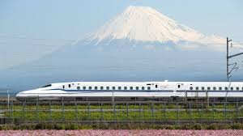
Tokyo → Kyoto
Shinkansen travel day, hotel check-in, and an easy first evening in Gion.
Shinkansen Tickets
Nozomi 397 · Tokyo → Kyoto
Date: Tue · Mar 17, 2026
Departure: 12:42 PM · Tokyo Station
Arrival: 2:57 PM · Kyoto Station
Duration: 2h 15m
Passengers: 2 adults · 1 child
Scan the QR codes at the Shinkansen gate.
Morning
10:30 AM — Check out of Hyatt Regency Tokyo10:45 AM — Taxi or walk to Shinjuku Station11:00 AM — Take JR Chuo Line (Rapid) Route: Shinjuku → Tokyo Station
Travel time: ~15 minutes
11:20 AM — Arrive at Tokyo Station11:20 AM – 12:20 PM — Buffer time for platform, snacks, and ekiben lunch boxes
Shinkansen
Train: Nozomi 397
Departure: 12:42 PM from Tokyo
Arrival: 2:57 PM in Kyoto
Duration: 2h 15m
Passengers: 2 adults · 1 child
Kyoto Hotel
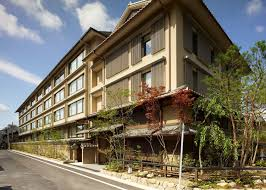
Hotel The Celestine Kyoto Gion
Check-in: Tue Mar 17 · from 3:00 PM
Check-out: Fri Mar 20 · until 12:00 PM
Stay: 3 nights
Room: Superior Twin Room · Non-Smoking
Guests: 2 adults · 1 child
Higashiyama-ku Komatsucho 572, Kyoto, Japan
Phone: +81 75-532-3111
Get Directions
Arrival Evening
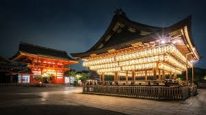
3:10 PM — Taxi from Kyoto Station to hotel3:30 PM — Check in and rest5:00 PM — Walk to Yasaka Shrine 5:30 PM — Explore Gion streets6:30 PM — Dinner near Gion8:00 PM — Return to hotel
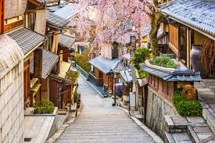
Wednesday · March 18
Kyoto day with Fushimi Inari in the morning, then Arashiyama bamboo grove and monkey park.
Morning Highlight
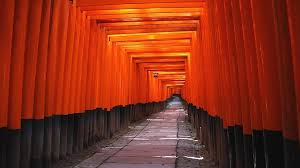
Fushimi Inari Taisha
Walk through Kyoto’s famous tunnels of orange torii gates. The path climbs the mountain and becomes quieter the farther you go.
Afternoon Highlight
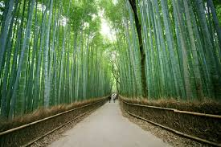
Arashiyama
Explore the bamboo grove, visit the monkey park, and walk along the river near Togetsukyo Bridge.
Fushimi Inari + Arashiyama
Start with Kyoto’s famous orange torii gates, then head west for bamboo, monkeys, and river views.
Morning
8:00 AM — Breakfast near hotel8:30 AM — Taxi to Kyoto Station8:45 AM — Take JR Nara Line Route: Kyoto Station → Inari Station
Travel time: ~5 minutes
9:00 AM – 10:00 AM — Visit Fushimi Inari Taisha Walk through the first section of the orange torii gates
Travel to Arashiyama
10:05 AM — Return to Inari Station 10:10 AM — Take JR Nara Line back to Kyoto Station 10:25 AM — Transfer to JR Sagano Line Route: Kyoto Station → Saga-Arashiyama
10:50 AM — Arrive in Arashiyama
Arashiyama Plan
11:00 AM — Walk the Bamboo Grove 11:45 AM — Head to Iwatayama Monkey Park 12:10 PM – 1:00 PM — Monkey park visit and Kyoto views1:15 PM — Lunch near Togetsukyo Bridge 2:15 PM — Walk river area and browse shops3:30 PM — Return toward station
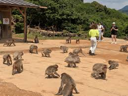
Return to Hotel
3:45 PM — Take JR Sagano Line Route: Saga-Arashiyama → Kyoto Station
4:10 PM — Taxi to hotel4:30 PM — Rest at hotel7:00 PM — Dinner in Gion
Thursday · March 19
Historic Kyoto day with Kiyomizu-dera, old streets, and Nishiki Market.
Highlight
Higashiyama
Temple views, preserved old Kyoto streets, and market food.
Morning
8:30 AM — Breakfast9:30 AM — Taxi to Kiyomizu-dera 10:00 AM — Explore temple grounds and terrace11:00 AM — Walk downhill through Sannenzaka 11:30 AM — Continue through Ninenzaka
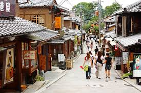
Lunch + Afternoon
12:30 PM — Lunch in Higashiyama2:00 PM — Taxi to Nishiki Market 2:15 PM – 3:30 PM — Explore market and try snacks4:00 PM — Return to hotel and rest
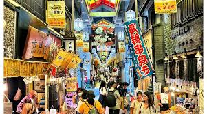
Evening
6:30 PM — Evening walk in Gion 7:30 PM — Dinner
Friday · March 20
Travel from Kyoto to Hiroshima, visit the Peace Memorial area, and keep the afternoon flexible.
Highlight
Hiroshima Peace Memorial
A meaningful day centered around the Atomic Bomb Dome, Peace Memorial Park, and museum.
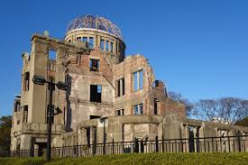
Shinkansen to Hiroshima
Hikari 735 · Kyoto → Hiroshima
Date: Fri · Mar 20, 2026
Departure: 8:29 AM · Kyoto
Arrival: 10:33 AM · Hiroshima
Train: Series N700
Cars: 16
Class: Green
Passengers: 2 adults · 1 child
Seats
Car 10 · Seat 17A Car 10 · Seat 17C Car 10 · Seat 17D
Arrival + Hotel
10:33 AM — Arrive at Hiroshima StationWalk to hotel and leave luggage if room is not ready
Hotel: Sheraton Grand Hiroshima Hotel
Check-in: from 3:00 PM
Peace Memorial Plan
11:15 AM — Tram or taxi to Peace Memorial area11:45 AM — See Atomic Bomb Dome 12:05 PM — Walk through Peace Memorial Park 12:45 PM — Visit Peace Memorial Museum 2:15 PM — Lunch nearby
With a child, you may want to move through the museum selectively, since some exhibits are intense.
Afternoon Options
Option A · Hiroshima Castle
Short taxi ride from the memorial area
Good for open space and an easy walk
Option B · Shukkeien Garden
Beautiful traditional Japanese garden
Calmer and more relaxing after the museum
Evening
4:30 PM — Return to hotel and check in6:30 PM — Dinner near Hiroshima Station8:00 PM — Early night
Saturday · March 21
Return from Hiroshima to Tokyo via Shinkansen.
Shinkansen to Tokyo
Nozomi 96 · Hiroshima → Tokyo
Date: Sat · Mar 21, 2026
Departure: 13:03 · Hiroshima
Arrival: 16:57 · Tokyo
Train: N700 Series
Cars: 16
Passengers: 2 adults · 1 child
QR Tickets
Tokyo Hotel
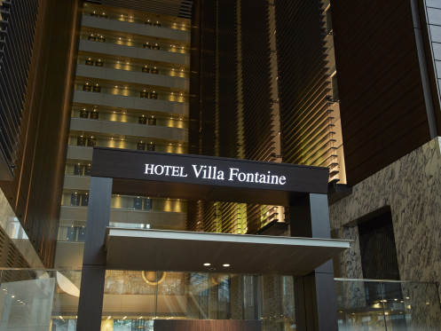
Hotel Villa Fontaine Grand Tokyo - Shiodome
Hotels.com itinerary: 73384921506667
Check-in: Sat Mar 21 · 3:00 PM
Check-out: Sun Mar 22 · 11:00 AM
Stay: 1 night
Room: Deluxe King (30sqm) · High Floor
Guests: 2 adults · 1 child
1-9-2 Higashi-shinbashi, Minato-ku, Tokyo 105-0021 Japan
Get Directions
Sunday · March 22
Travel home from Tokyo to San Francisco.
Return Flight
United UA 838
Depart: 4:45 PM
From: NRT , Tokyo, Japan
Arrive: 10:15 AM
To: SFO , San Francisco, CA
Duration: 9h 30m
Aircraft: Boeing 777-200
Fare Class: United Economy (S)
Seats: 34J, 34K, 34L